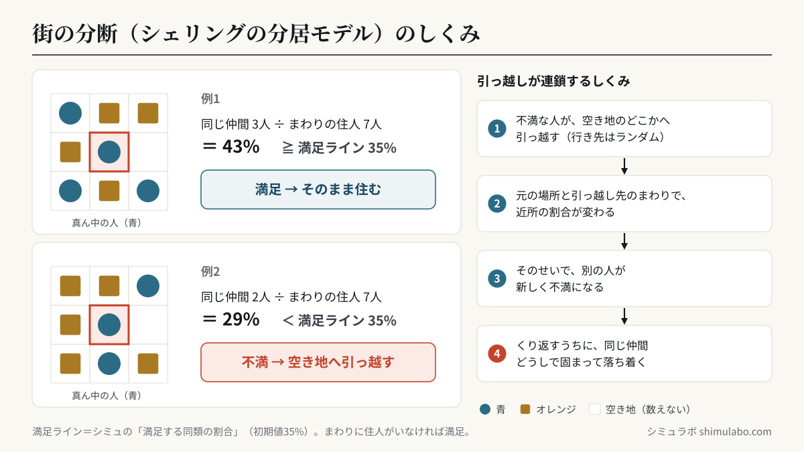
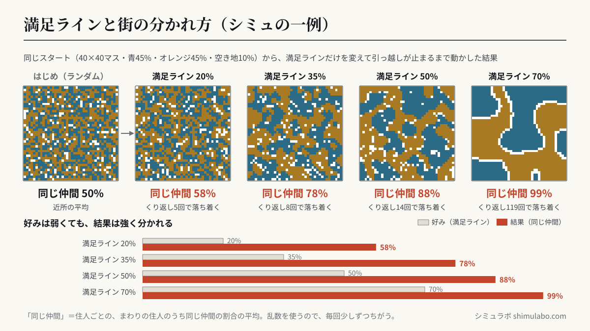

シェリングの分居モデル
経済学者シェリングが示した有名なモデルです。各住人は「近所の◯％以上が同じ仲間なら満足、足りなければ引っ越す」というルールだけで動きます。「相手を排除したい」という気持ちはゼロ。それでも、わずかな好みが積み重なると、街全体は強く分断されてしまいます。






図はタップすると大きく表示されます。資料やSNSに使うときは、出典「シミュラボ」とページのURLを添えてください。
社会の分断やフィルターバブルを考えるうえで示唆に富んだモデルです。
数字で見る「弱い好み」の威力
1971年にトーマス・シェリングが示したこのモデルでは、住人が「近所の3割が同じ仲間なら満足」という、むしろ多様性に寛容といえる条件でも、街はくっきり分かれます。満足ラインを上げていくと分離はさらに進み、7割前後になると「どこに引っ越しても満足できない人」が出て、街が落ち着かなくなります。
| 満足する同類の割合 | 街の様子 |
|---|---|
| 10〜25% | ほとんど混ざったまま。引っ越しはすぐ止まる |
| 30〜40% | はっきり2つに分かれる（最も“意外”な領域） |
| 50〜60% | 大きな塊に分離。境界がくっきり |
| 70%〜 | 満足できる場所が見つからず、引っ越しが止まらない |
なぜ「弱い好み」が「強い分断」になるのか
不満な人が1人引っ越すと、元いた場所の周りは同類が減り、引っ越し先の周りは同類が増えます。つまり1回の引っ越しが、近所の別の人の不満を生み、連鎖します。個人の判断は小さくても、相互作用が増幅するため、結果は誰も望んでいない分断になります。シェリングはこの研究を含む業績で2005年にノーベル経済学賞を受賞しました。
よくある質問
- 差別の話ですか？
- むしろ逆で、強い差別意識がなくても分離が起きうることを示すモデルです。
- データは送信されますか？
- いいえ。すべてブラウザ内で動作します。
- 現実の街でも同じことが起きている？
- アメリカの都市の人種別居住分布や、SNSでの意見の分極（フィルターバブル）を説明するモデルとしてよく引用されます。「本人の意図」と「全体の結果」が一致しないことを示す代表例です。
- 分断を防ぐには？
- モデル上では、空き地を増やす／満足ラインを下げる／「同類が多すぎても不満」という条件を足す、などで混合状態が保たれます。現実の都市政策でもこうした示唆が議論されています。